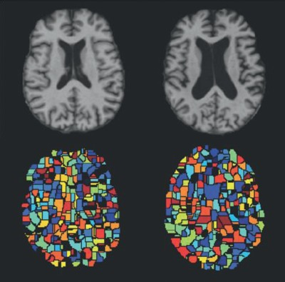
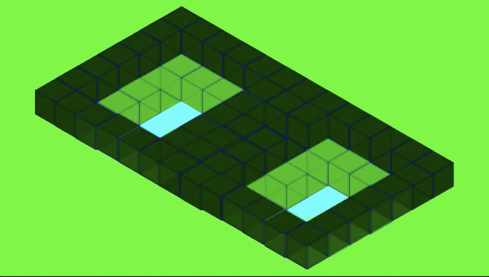
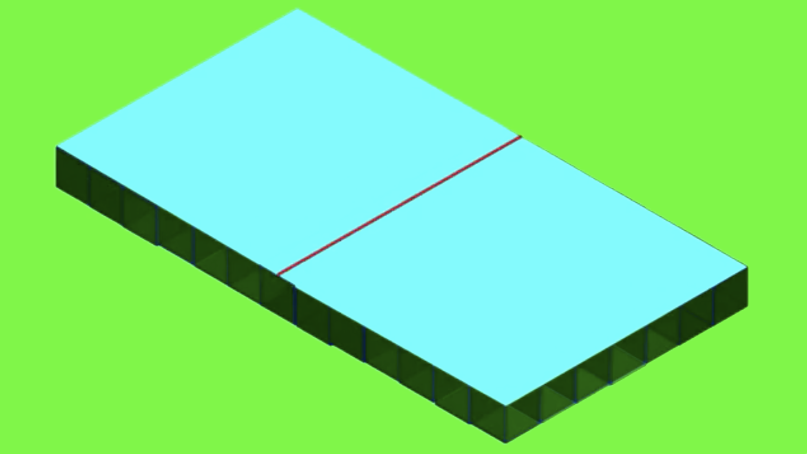
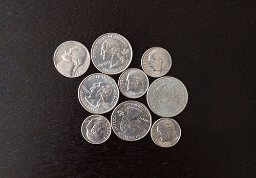

Algoritimo de WaterShed
Contexto
O algoritmo de WaterShed introduzido no inicio dos anos 90 por F. Meyer possui uma aplicação significativa na área de processamento de imagem, em específico na parte de segmentação de imagem.

O algoritmo
O algoritmo recebe como entrada uma imagem em greyscale, ou seja, em tons de cinza. Ele interpreta essa imagem como um mapa topográfico em que os píxeis vizinhos de mesmo tom são como curvas de nível.

Os níveis de menor valor são preenchidos como uma "piscina".

Quando as "piscinas" se encontram é delimitada uma barreira na imagem. Essa barreira se extende ao longo de vários pixeís vizinhos fazendo o contorno de "territórios" em que a cor é diferente da cor adjacente.

Exercício 1

Utilizando o algoritmo de watershed, queremos separar todas as moedas dessa imagem. O watershed pode causar algum problema nessa segmentação em que os objetos são maiores? Isto quer dizer existe a possibilidade de aplicarmos o watershed para essa imagem e ela não puder ser utilizada para análise?
continuar ou terminar
Sim, o que pode acontecer é a super segmentação da imagem. Uma vez que a entrada consiste de diferentes valores de pixel, formando várias "piscinas", a imagem de saída é em greyscale com muitas barreiras o que acaba dificultando a análise.
img supersegmentadaaaaaaaaaa
Exercício 2
Como é possível solucionar esse problema?
continuar ou terminar
Em uma implementação do algoritmo a utilização de marcadores iniciais pode fazer a diferença e diminuir os pontos pelos quais o algoritmo deve iterar, ou seja, diminuindo o número de "piscinas" iniciais, evitando a supersegmentação.
É possível adicionar marcadores com uma segunda imagem de entrada com as mesmas dimensões da imagem a ser segmentada contendo pontos/marcadores onde são localizados os centros das áreas conectadas. Esses pontos geralmente correspondem aos mínimos locais da imagem de entrada.

Implementação:
Agora vamos abrir o jupyter notebook que está na raiz deste repositório.
Complexidade:
Para o algoritmo identificar onde as "piscinas" se encontraram é realizada uma iteração por todos os píxeis da imagem, ou seja, uma busca em largura. Dessa forma o watershed tem característica linear e possui complexidade O(n).